Consejos para el evento Cuando los mundos chocan en Hero Wars Alliance
El evento Cuando los mundos chocan en Hero Wars Alliance es ideal para que los principiantes reúnan recursos para mejorar los titanes y sus artefactos. El evento se desbloquea en el nivel de equipo 35 y dura tres días.
Puede encontrar este evento en una pestaña separada en la ventana Eventos especiales. El evento presenta varias cadenas de misiones:
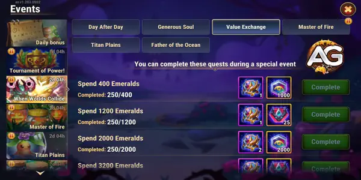
1. Día tras día
Inicia sesión todos los días para recibir piedras de aspecto de titán y puntos de temporada.
| Tarea | Recompensa 1 | Recompensa 2 |
|---|---|---|
| Inicia sesión 1 vez durante el evento especial |
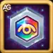 Piedra de piel de titán x150 |
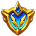 Puntos de temporada x20 |
| Inicia sesión 2 veces durante el evento especial |
Piedra de piel de titán x300
|
Puntos de temporada x20
|
| Inicia sesión 3 veces durante el evento especial |
Piedra de piel de titán x600
|
Puntos de temporada x20
|
| Total |
Piedra de piel de titán x1050
|
Puntos de temporada x60
|
2. Alma generosa
Gana puntos VIP para recibir cofres de artefactos claros y oscuros.
| Tarea | Recompensa 1 |
|---|---|
| Consigue 200 puntos VIP |
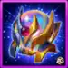 Cofre de artefactos de titán claro y oscuro x5 |
| Consigue 1500 puntos VIP |
Cofre de artefactos de titán claro y oscuro x20
|
| Consigue 4000 puntos VIP |
Cofre de artefactos de titán claro y oscuro x60
|
| Consigue 8000 puntos VIP |
Cofre de artefactos de titán claro y oscuro x100
|
| Consigue 15000 puntos VIP |
Cofre de artefactos de titán claro y oscuro x200
|
| Total |
Cofre de artefactos de titán claro y oscuro x385
|
3. Intercambio de valor
Gasta esmeraldas para recibir cofres de artefactos de titán claro y oscuro, piedras de piel de titán y puntos de temporada.
| Tarea | Recompensa 1 | Recompensa 2 | Recompensa 3 |
|---|---|---|---|
| Gasta 400 esmeraldas |
Cofre de artefactos de titán claro y oscuro x1
|
Piedras de piel de titán x1000
|
|
| Gasta 1200 esmeraldas |
Cofre de artefactos de titán claro y oscuro x1
|
Puntos de temporada x25
|
|
| Gasta 2000 esmeraldas |
Cofre de artefactos de titán claro y oscuro x2
|
Piedras de piel de titán x2000
|
|
| Gasta 3200 esmeraldas |
Cofre de artefactos de titán claro y oscuro x3
|
Puntos de temporada x25
|
|
| Gasta 4400 esmeraldas |
Cofre de artefactos de titán claro y oscuro x4
|
Piedras de piel de titán x4000
|
|
| Gasta 6000 esmeraldas |
Cofre de artefactos de titán claro y oscuro x5
|
Puntos de temporada x50
|
|
| Gasta 8000 esmeraldas |
Cofre de artefactos de titán claro y oscuro x6
|
Piedras de piel de titán x6000
|
|
| Gasta 10000 esmeraldas |
Cofre de artefactos de titán claro y oscuro x7
|
Puntos de temporada x50
|
|
| Gasta 14000 esmeraldas |
Cofre de artefactos de titán claro y oscuro x8
|
Piedras de piel de titán x8000
|
|
| Gasta 19000 esmeraldas |
Cofre de artefactos de titán claro y oscuro x10
|
Puntos de temporada x75
|
|
| Gasta 26000 esmeraldas |
Cofre de artefactos de titán claro y oscuro x12
|
Piedras de piel de titán x10000
|
|
| Gasta 35000 esmeraldas |
Cofre de artefactos de titán claro y oscuro x15
|
Puntos de temporada x100
|
|
| Gasta 46000 esmeraldas |
Cofre de artefactos de titán claro y oscuro x20
|
Piedras de piel de titán x12000
|
|
| Gasta 60000 esmeraldas |
Cofre de artefactos de titán claro y oscuro x25
|
Puntos de temporada x100
|
|
| Gasta 80000 esmeraldas |
Cofre de artefactos de titán claro y oscuro x30
|
Piedras de piel de titán x15000
|
|
| Gasta 100000 esmeraldas |
Cofre de artefactos de titán claro y oscuro x40
|
Puntos de temporada x150
|
|
| Total (100000 esmeraldas) |
Cofre de artefactos de titán claro y oscuro x189
|
Piedras de piel de titán x58000
|
Puntos de temporada x575
|
4. Maestro del Fuego
Completa misiones para recibir piedras del alma de Araji, cofres de artefactos claros y oscuros y puntos de temporada.
| Tarea | Recompensa 1 | Recompensa 2 | Recompensa 3 |
|---|---|---|---|
| Completa 1 misión del evento especial Maestro del Fuego. |
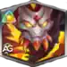 Piedras del alma de Araji x2 |
||
| Completa 3 misiones del evento especial Maestro del Fuego. |
Piedras del alma de Araji x4
|
||
| Completa 7 misiones del evento especial Maestro del Fuego. |
Piedras del alma de Araji x6
|
Puntos de temporada x35
|
|
| Completa 11 misiones del evento especial Maestro del Fuego. |
Piedras del alma de Araji x8
|
Cofre de artefactos claro y oscuro x1
|
|
| Completa 15 misiones del evento especial Maestro del Fuego. |
Piedras del alma de Araji x10
|
Puntos de temporada x35
|
|
| Completa 19 misiones del evento especial Maestro del Fuego. |
Piedras del alma de Araji x12
|
Cofre de artefactos claro y oscuro x1
|
|
| Completa 23 misiones del evento especial Maestro del Fuego. |
Piedras del alma de Araji x14
|
Puntos de temporada x40
|
|
| Completa 28 misiones del evento especial Maestro del Fuego. |
Piedras del alma de Araji x16
|
Cofre de artefactos claro y oscuro x2
|
|
| Completa 33 misiones del evento especial Maestro del Fuego. |
Piedras del alma de Araji x18
|
Cofre de artefactos claro y oscuro x3
|
|
| Completa 40 misiones del evento especial Maestro del Fuego. |
Piedras del alma de Araji x28
|
Cofre de artefactos claros y oscuros x7
|
|
| Total (40 misiones) |
Piedras del alma de Araji x118
|
Cofre de artefactos claros y oscuros x14
|
Puntos de temporada x110
|
5. Padre del Océano
Completa misiones para recibir piedras del alma de Hyperion, cofres de artefactos claros y oscuros y puntos de temporada.
| Tarea | Recompensa 1 | Recompensa 2 | Recompensa 3 |
|---|---|---|---|
| Completa 2 misiones del evento especial Padre del Océano. |
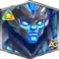 Piedras del alma de Hyperion x2 |
||
| Completa 4 misiones del evento especial Padre del Océano. |
Piedras del alma de Hyperion x4
|
||
| Completa 6 misiones del evento especial Padre del Océano. |
Piedras del alma de Hyperion x6
|
Puntos de temporada x35
|
|
| Completa 8 misiones del evento especial Padre del Océano. |
Piedras del alma de Hyperion x8
|
Cofre de artefactos claros y oscuros x1
|
|
| Completa 10 misiones del evento especial Padre del Océano. |
Piedras del alma de Hyperion x10
|
Puntos de temporada x35
|
|
| Completa 12 misiones del evento especial Padre del Océano. |
Piedras del alma de Hyperion x12
|
Cofre de artefactos claros y oscuros x1
|
|
| Completa 14 misiones del evento especial Padre del Océano. |
Piedras del alma de Hyperion x14
|
Puntos de temporada x40
|
|
| Completa 16 misiones del evento especial Padre del Océano. |
Piedras del alma de Hyperion x16
|
Cofre de artefactos claro y oscuro x2
|
|
| Completa 18 misiones del evento especial Padre del Océano. |
Piedras del alma de Hyperion x18
|
Cofre de artefactos claros y oscuros x3
|
|
| Completa 28 misiones del evento especial Padre del Océano. |
Piedras del alma de Hyperion x28
|
Cofre de artefactos claros y oscuros x7
|
|
| Total (28 misiones) |
Piedras del alma de Hyperion x118
|
Cofre de artefactos claros y oscuros x14
|
Puntos de temporada x110
|
6. Llanuras de Titanes
Completa misiones para recibir piedras del alma del Edén, cofres de artefactos claros y oscuros y puntos de temporada.
| Tarea | Recompensa 1 | Recompensa 2 | Recompensa 3 |
|---|---|---|---|
| Completa 1 misión del evento especial Llanuras de Titanes. |
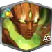 Piedras del alma de Edén x2 |
||
| Completa 3 misiones del evento especial Llanuras de Titanes. |
Piedras del alma de Edén x4
|
||
| Completa 7 misiones del evento especial Llanuras de Titanes. |
Piedras del alma de Edén x6
|
Puntos de temporada x35
|
|
| Completa 11 misiones del evento especial Llanuras de Titanes. |
Piedras del alma de Edén x8
|
Cofre de artefactos claros y oscuros x1
|
|
| Completa 15 misiones del evento especial Llanuras de Titanes. |
Piedras del alma de Edén x10
|
Puntos de temporada x35
|
|
| Completa 19 misiones del evento especial Llanuras de Titanes. |
Piedras del alma de Edén x12
|
Cofre de artefactos claros y oscuros x1
|
|
| Completa 23 misiones del evento especial Llanuras de Titanes. |
Piedras del alma de Edén x14
|
Puntos de temporada x40
|
|
| Completa 28 misiones del evento especial Llanuras de Titanes. |
Piedras del alma de Edén x16
|
Cofre de artefactos claro y oscuro x2
|
|
| Completa 33 misiones del evento especial Llanuras de Titanes. |
Piedras del alma de Edén x18
|
Cofre de artefactos claros y oscuros x3
|
|
| Completa 40 misiones del evento especial Llanuras de Titanes. |
Piedras del alma de Edén x28
|
Cofre de artefactos claros y oscuros x7
|
|
| Total (40 misiones) |
Piedras del alma de Edén x118
|
Cofre de artefactos claros y oscuros x14
|
Puntos de temporada x110
|
7. Campos de abundancia
Complétalo todos los días antes del final del evento.
| Tarea | ## | #1 | Recompensas 1 | #2 | Recompensas 2 |
|---|---|---|---|---|---|
| Recoge 160000 unidades de comida en el mapa. | 160000 | 40 |
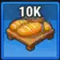 comida de 10k |
1 |
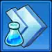 1h de aceleración de investigación |
| Recoge 375000 unidades de comida en el mapa. | 375000 | 50 |
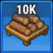 madera de 10k |
1 |
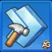 1h de aceleración de construcción |
| Recoge 525000 unidades de comida en el mapa. | 525000 | 51 |
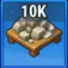 piedra de 10k |
2 |
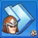 1h de aceleración de entrenamiento |
| Recoge 1000000 unidades de comida en el mapa. | 1000000 | 54 |
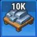 hierro 10k |
3 |
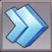 1 m de aceleración general |
| Recoge 4000000 unidades de comida en el mapa. | 4000000 | 2 |
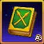 manual de lanceros |
11 |
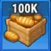 100k comida |
| Recoge 4200000 unidades de comida en el mapa. | 4200000 | 11 |
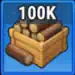 madera de 100k |
7 |
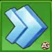 Aceleración general de 5 m. |
Misiones secundarias de Cuando los mundos chocan: Maestro del Fuego, Llanuras de Titanes y Padre del Océano.
A continuación encontrarás consejos para completar los eventos específicos de Cuando los mundos chocan: Maestro del Fuego, Llanuras de Titanes y Padre del Océano.
Maestro del fuego
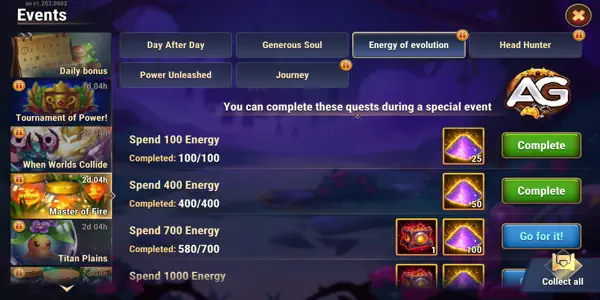
El evento Maestro del Fuego estará disponible en el nivel de equipo 35 y durará tres días. Completa misiones para obtener recursos que te permitan mejorar a los titanes de Fuego.
El evento tiene varias cadenas de misiones: Día tras día, Alma generosa, Energía de la evolución, Cazador de cabezas, Poder desatado y Viaje.
Día tras día
Puedes completar estas misiones durante un evento especial.
| Tarea | Premio |
|---|---|
| Inicia sesión 1 vez durante el evento especial | Piedras del alma de Moloch x10 |
| Inicia sesión 2 veces durante el evento especial | Piedras del alma de Vulcano x10 |
| Inicia sesión 3 veces durante el evento especial | Piedras del alma de Ignis x10 |
Alma generosa
Puedes completar estas misiones durante un evento especial.
| Tarea | Recompensa 1 | Recompensa 2 |
|---|---|---|
| Consigue 200 puntos VIP | Cofres de artefactos del Titán de Fuego x5 | Piedras del alma de Araji x5 |
| Consigue 800 puntos VIP | Cofres de artefactos del Titán de Fuego x7 | Piedras del alma de Araji x10 |
| Consigue 1.800 puntos VIP | Cofres de artefactos de titán de fuego x10 | Piedras del alma de Araji x15 |
| Consigue 3200 puntos VIP | Cofres de artefactos del Titán de Fuego x15 | Piedras del alma de Araji x25 |
| Consigue 7000 puntos VIP | Cofres de artefactos del Titán de Fuego x20 | Piedras del alma de Araji x50 |
Energía de la evolución
Puedes completar estas misiones durante un evento especial.
| Tarea | Recompensa 1 | Recompensa 2 |
|---|---|---|
| Gasta 100 de energía | Polvo de hadas x25 | |
| Gasta 400 de energía | Polvo de hadas x50 | |
| Gasta 700 de energía | Polvo de hadas x100 | Cofre de artefactos del Titán de Fuego x1 |
| Gasta 1000 de energía | Polvo de hadas x150 | Cofre de artefactos del Titán de Fuego x1 |
| Gasta 1.300 de energía. | Polvo de hadas x200 | Cofre de artefactos del Titán de Fuego x1 |
| Gasta 1.800 de energía | Polvo de hadas x250 | Cofres de artefactos del Titán de Fuego x2 |
| Gasta 2200 de energía | Polvo de hadas x350 | Cofres de artefactos del Titán de Fuego x2 |
| Gasta 3000 de energía | Polvo de hadas x450 | Cofres de artefactos del Titán de Fuego x3 |
| Gasta 5000 de energía | Polvo de hadas x650 | Cofres de artefactos del Titán de Fuego x6 |
| Gasta 9.000 energía | Polvo de hadas x1000 | Cofres de artefactos del Titán de Fuego x8 |
| Gasta 14.000 energía | Polvo de hadas x1,750 | Cofres de artefactos de titán de fuego x12 |
| Gasta 20.000 energía | Polvo de hadas x2,500 | Cofres de artefactos del Titán de Fuego x20 |
Cazador de cabezas
Puedes completar estas misiones durante un evento especial.
| Tarea | Premio |
|---|---|
| Gana 1 batalla en Terrallende. | Cofre de focas x1 |
| Gana 3 batallas en Terrallende. | Cofre de focas x1 |
| Gana 5 batallas en Terrallende. | Cofres de focas x2 |
| Gana 8 batallas en Terrallende. | Cofres de focas x2 |
| Gana 11 batallas en Terrallende. | Cofres de focas x3 |
| Gana 15 batallas en Terrallende. | Cofres de focas x4 |
| Gana 20 batallas en Terrallende. | Cofres de focas x5 |
Poder desatado
Puedes completar estas misiones durante un evento especial.
| Tarea | Premio |
|---|---|
| Completa 1 invocación en el Círculo de Invocación | Piedras de piel de titán x100 |
| Completa 3 invocaciones en el Círculo de Invocación. | Piedras de piel de titán x200 |
| Completa 5 invocaciones en el Círculo de Invocación. | Piedras de piel de titán x300 |
| Completa 10 invocaciones en el Círculo de Invocación. | Piedras de piel de titán x500 |
| Completa 15 invocaciones en el Círculo de Invocación. | Piedras de piel de titán x750 |
| Completa 30 invocaciones en el Círculo de Invocación. | Piedras de piel de titán x1000 |
Viaje
Puedes completar estas misiones durante un evento especial.
| Tarea | Premio |
|---|---|
| Comenzar 1 expedición | Cofre de artefactos del Titán de Fuego x1 |
| Comienza 3 expediciones | Cofres de artefactos del Titán de Fuego x2 |
| Comienza 6 expediciones | Cofres de artefactos del Titán de Fuego x3 |
| Comienza 9 expediciones | Chispa demoníaca x1 |
| Comienza 12 expediciones | Chispa demoníaca x1 |
| Comienza 16 expediciones | Chispa demoníaca x1 |
| Comienza 21 expediciones | Chispas demoníacas x2 |
Padre del Océano
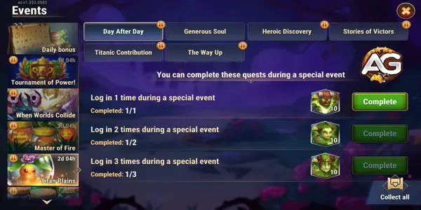
El evento Padre del Océano estará disponible en el nivel de equipo 35 y durará tres días. Completa misiones para obtener recursos que te permitan mejorar a los titanes de Agua.
El evento tiene varias cadenas de misiones: Día tras día, Alma generosa, Secretos de Terrallende, Fusión de almas, Compañero de armas y Artefactos de Valquiria.
Día tras día
Puedes completar estas misiones durante un evento especial.
| Tarea | Premio |
|---|---|
| Inicia sesión 1 vez durante el evento especial | Piedras del alma de Sigurd x10 |
| Inicia sesión 2 veces durante el evento especial | Piedras del alma de Nova x10 |
| Inicia sesión 3 veces durante el evento especial | Piedras del alma de Mairi x10 |
alma generosa
Puedes completar estas misiones durante un evento especial.
| Tarea | Recompensa 1 | Recompensa 2 |
|---|---|---|
| Consigue 600 puntos VIP | Cofres de artefactos del titán de agua x5 | Piedras del alma de Hyperion x15 |
| Consigue 1.400 puntos VIP | Cofres de artefactos del titán de agua x8 | Piedras del alma de Hyperion x20 |
| Consigue 3000 puntos VIP | Cofres de artefactos del titán de agua x15 | Piedras del alma de Hyperion x30 |
| Consigue 5.600 puntos VIP | Cofres de artefactos del Titán de agua x25 | Piedras del alma de Hyperion x55 |
| Consigue 12.000 puntos VIP | Cofres de artefactos del titán de agua x40 | Piedras del alma de Hyperion x90 |
Secretos de Terrallende
Puedes completar estas misiones durante un evento especial.
| Tarea | Recompensa 1 | Recompensa 2 |
|---|---|---|
| Abre 3 cofres en Outlands | Polvo de hadas x25 | Cofre de artefactos de titán de agua x1 |
| Abre 5 cofres en Outlands | Polvo de hadas x50 | Cofre de artefactos de titán de agua x1 |
| Abre 7 cofres en Outlands | Polvo de hadas x100 | Cofres de artefactos del titán de agua x2 |
| Abre 10 cofres en Outlands | Polvo de hadas x150 | Cofres de artefactos del titán de agua x2 |
| Abre 15 cofres en Outlands | Polvo de hadas x200 | Cofres de artefactos del titán de agua x3 |
| Abre 25 cofres en Outlands | Polvo de hadas x300 | Cofres de artefactos del titán de agua x3 |
| Abre 35 cofres en Outlands | Polvo de hadas x450 | Cofres de artefactos del titán de agua x4 |
| Abre 50 cofres en Outlands | Polvo de hadas x600 | Cofres de artefactos del titán de agua x5 |
| Abre 75 cofres en Outlands. | Polvo de hadas x750 | Cofres de artefactos del titán de agua x7 |
| Abre 125 cofres en Outlands. | Polvo de hadas x900 | Cofres de artefactos del titán de agua x9 |
| Abre 175 cofres en Outlands. | Polvo de hadas x1,100 | Cofres de artefactos de titán de agua x12 |
| Abre 225 cofres en Outlands. | Polvo de hadas x1,300 | Cofres de artefactos del titán de agua x15 |
| Abre 275 cofres en Outlands. | Polvo de hadas x1,500 | Cofres de artefactos del titán de agua x18 |
| Abre 350 cofres en Outlands | Polvo de hadas x1,750 | Cofres de artefactos del Titán de agua x22 |
Fusión de almas
Puedes completar estas misiones durante un evento especial.
| Tarea | Premio |
|---|---|
| Consigue 5 piedras de alma de cualquier héroe. | Pociones de Titán x100 |
| Consigue 10 piedras del alma de cualquier héroe. | Pociones de Titán x200 |
| Consigue 15 piedras de alma de cualquier héroe. | Pociones de Titán x400 |
| Consigue 25 piedras de alma de cualquier héroe. | Pociones de Titán x1,000 |
| Consigue 50 piedras de alma de cualquier héroe. | Pociones de Titán x2,000 |
| Consigue 85 piedras de alma de cualquier héroe. | Pociones de titán x3000 |
Compañero de armas
Puedes completar estas misiones durante un evento especial.
| Tarea | Premio |
|---|---|
| Gana 200 puntos de actividad del gremio | Cofre de artefactos de titán de agua x1 |
| Gana 600 puntos de actividad del gremio | Cofre de artefactos de titán de agua x1 |
| Gana 1200 puntos de actividad del gremio | Cofres de artefactos del titán de agua x2 |
| Gana 2000 puntos de actividad del gremio | Cofres de artefactos del titán de agua x2 |
| Gana 3500 puntos de actividad del gremio | Cofres de artefactos del titán de agua x3 |
| Gana 5000 puntos de actividad del gremio | Cofres de artefactos del titán de agua x3 |
| Gana 8000 puntos de actividad del gremio | Cofres de artefactos del titán de agua x4 |
Artefactos de Valquiria
Puedes completar estas misiones durante un evento especial.
| Tarea | Premio |
|---|---|
| Abrir 1 cofre de artefactos | Cofre de artefactos de titán de agua x1 |
| Abre 3 cofres de artefactos | Cofres de artefactos del titán de agua x2 |
| Abre 7 cofres de artefactos | Cofres de artefactos del titán de agua x3 |
| Abre 11 cofres de artefactos | Gota de lluvia x1 |
| Abre 15 cofres de artefactos | Gota de lluvia x1 |
| Abre 20 cofres de artefactos | Gota de lluvia x1 |
| Abre 30 cofres de artefactos | Gotas de lluvia x2 |
Llanuras de Titán
El evento Llanuras de Titanes estará disponible en el nivel de equipo 35 y durará tres días. Completa misiones para obtener recursos que te permitan mejorar a los titanes de Tierra.
El evento tiene varias cadenas de misiones: Día tras día, alma generosa, Descubrimiento heroico, Historias de vencedores, Contribución titánica, y El camino hacia arriba.
Día tras día
Puedes completar estas misiones durante un evento especial.
| Tarea | Premio |
|---|---|
| Inicia sesión 1 vez durante el evento especial | Piedras del alma de Angus x10 |
| Inicia sesión 2 veces durante el evento especial | Piedras del alma de Sylva x10 |
| Inicia sesión 3 veces durante el evento especial | Piedras del alma de Avalon x10 |
alma generosa
Puedes completar estas misiones durante un evento especial.
| Tarea | Recompensa 1 | Recompensa 2 |
|---|---|---|
| Consigue 400 puntos VIP | Cofres de artefactos de titán terrestre x5 | Piedras del alma del Edén x10 |
| Consigue 1100 puntos VIP | Cofres de artefactos de titán terrestre x8 | Piedras del alma del Edén x15 |
| Consigue 2.400 puntos VIP | Cofres de artefactos de titán terrestre x15 | Piedras del alma del Edén x20 |
| Consigue 4.400 puntos VIP | Cofres de artefactos de titán terrestre x20 | Piedras del alma del Edén x45 |
| Consigue 9.500 puntos VIP | Cofres de artefactos de titán terrestre x30 | Piedras del alma del Edén x70 |
Descubrimiento heroico
Puedes completar estas misiones durante un evento especial.
| Tarea | Recompensa 1 | Recompensa 2 |
|---|---|---|
| Abre 1 cofre heroico | Polvo de hadas x50 | Cofre de artefactos del Titán terrestre x1 |
| Abre 3 cofres heroicos | Polvo de hadas x100 | Cofres de artefactos de titán terrestre x2 |
| Abre 6 cofres heroicos | Polvo de hadas x150 | Cofres de artefactos de titán terrestre x3 |
| Abre 15 cofres heroicos. | Polvo de hadas x250 | Cofres de artefactos de titán terrestre x4 |
| Abre 30 cofres heroicos. | Polvo de hadas x250 | Cofres de artefactos de titán terrestre x5 |
| Abre 60 cofres heroicos. | Polvo de hadas x500 | Cofres de artefactos de titán terrestre x8 |
| Abre 100 cofres heroicos. | Polvo de hadas x800 | Cofres de artefactos de titán terrestre x12 |
| Abre 150 cofres heroicos. | Polvo de hadas x1,500 | Cofres de artefactos de titán terrestre x20 |
Historias de vencedores
Puedes completar estas misiones durante un evento especial.
| Tarea | Premio |
|---|---|
| Completa 5 misiones | Cofre de artefactos del Titán terrestre x1 |
| Completa 10 misiones | Cofre de artefactos del Titán terrestre x1 |
| Completa 20 misiones | Cofres de artefactos de titán terrestre x2 |
| Completa 40 misiones | Cofres de artefactos de titán terrestre x2 |
| Completa 75 misiones | Cofres de artefactos de titán terrestre x3 |
| Completa 110 misiones | Cofres de artefactos de titán terrestre x3 |
| Completa 150 misiones | Cofres de artefactos de titán terrestre x4 |
Contribución titánica
Puedes completar estas misiones durante un evento especial.
| Tarea | Premio |
|---|---|
| Recoge 75 titanita en la mazmorra del gremio. | Piedras de piel de titán x100 |
| Recoge 110 titanita en la mazmorra del gremio. | Piedras de piel de titán x200 |
| Recoge 150 titanita en la mazmorra del gremio. | Piedras de piel de titán x300 |
| Recoge 250 titanita en la mazmorra del gremio. | Piedras de piel de titán x450 |
| Recoge 350 titanita en la mazmorra del gremio. | Piedras de piel de titán x600 |
| Recoge 450 titanita en la mazmorra del gremio. | Piedras de piel de titán x750 |
| Recoge 550 titanita en la mazmorra del gremio. | Piedras de piel de titán x900 |
| Recoge 700 titanita en la mazmorra del gremio. | Piedras de piel de titán x1,250 |
El camino hacia arriba
Puedes completar estas misiones durante un evento especial.
| Tarea | Premio |
|---|---|
| Abre 5 cofres en la Torre | Cofre de artefactos del Titán terrestre x1 |
| Abre 10 cofres en la Torre. | Cofres de artefactos de titán terrestre x2 |
| Abre 15 cofres en la Torre. | Cofres de artefactos de titán terrestre x3 |
| Abre 20 cofres en la Torre. | Raíz de mandrágora x1 |
| Abre 30 cofres en la Torre. | Raíz de mandrágora x1 |
| Abre 45 cofres en la Torre. | Raíz de mandrágora x1 |
| Abre 60 cofres en la Torre. | Raíces de mandrágora x2 |
Consejos para el éxito
Participación diaria: Asegúrate de iniciar sesión todos los días para maximizar tus recompensas de la cadena de misiones Día tras día. La participación constante es clave para reunir una gran cantidad de recursos.
Enfoque en los puntos VIP: Si buscas cofres de artefactos claros y oscuros, concéntrate en conseguir puntos VIP mediante la cadena de misiones Alma generosa. Esto puede aumentar significativamente tu progreso.
Uso eficiente de las esmeraldas: Planifica sabiamente tus gastos en esmeraldas. La cadena de misiones Intercambio de valor ofrece recompensas valiosas por gastar esmeraldas, así que prioriza las compras que te ayudarán en el evento.
Finalización específica de misiones: Para las misiones de Maestro del Fuego, Llanuras de Titanes y Padre del Océano, concéntrate en completar las tareas específicas requeridas. Esto garantizará que obtengas las máximas recompensas, incluidas piedras del alma para Araji, Edén e Hyperion.
Conclusión del evento Cuando los mundos chocan
Participar en el evento Cuando los mundos chocan es una oportunidad fantástica para que los principiantes mejoren sus titanes y sus artefactos. Al completar misiones específicas como Maestro del Fuego, Llanuras de Titanes y Padre del Océano, los jugadores pueden reunir recursos vitales para fortalecer sus equipos.
Asegúrate de aprovechar al máximo este evento, ya que solo dura tres días. Prioriza tus tareas y utiliza tus recursos de forma eficiente para maximizar tus ganancias. Con estos consejos, estarás en el buen camino para potenciar a tus titanes y lograr un mayor éxito en Hero Wars Alliance.
¡Explora nuevas habilidades con nuestras guías destacadas!
¡Deja tu opinión!
¿Te gustó nuestra guía de eventos Cuando los mundos chocan? ¿Hay algo que no entendiste o sobre lo que te gustaría sugerir cambios? Te invitamos a unirte a nuestra sección de comentarios en la página del Blog de Alexandre Games. No dudes en expresar tu opinión, aclarar tus dudas y compartir tus sugerencias.
Haga clic en el botón a continuación para comenzar: